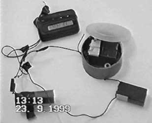
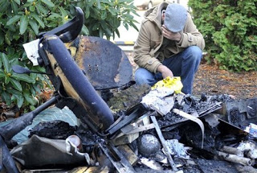
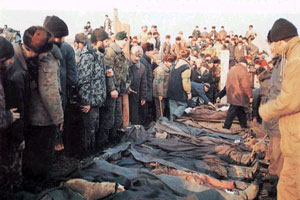
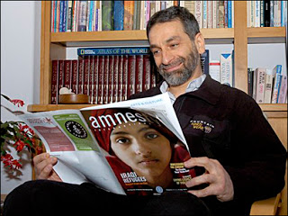

| Paramilitary "Security Organs": An FBI recruitment ad. |

"The creatures outside looked from pig to man, and from man to pig, and from pig to man again; but already it was impossible to say which was which."
-- George Orwell, Animal Farm
A few days after bombs ripped apart two apartment buildings Moscow, residents of Ryazan -- a town 100 miles southeast of the Capital City -- were alarmed to find several suspicious-looking figures loitering near a 13-story apartment complex. After police arrived on the scene they extracted three large sugar sacks from the high-rise. An examination of the sacks found that they contained hexagen -- the same high-yield explosive that had been used in the Moscow terrorist bombings just a few days earlier.
The police arrested two of the mysterious strangers, who immediately produced credentials issued by the Russian Federal Security Service (FSB), the successor to the KGB. Within a few hours high-ranking FSB officials intervened to free their operatives, claiming that they had been involved in an innocuous "training exercise."
"This was not a bomb," insisted then-FSB Director Nikolai Patrushev. "The exercise may not have been carried out well, but it was only a test, and the so-called explosive was only sacks of sugar."
There was at least one lapse in efficiency on the part of the FSB: The agency neglected to retrieve the detonator, which remained in the custody of the local police. Leaving aside the fact that tests had confirmed the presence of hexagen inside the "dummy" bomb, Patrushev didn't explain why the FSB would attach a genuine detonator to phony explosives. Nor did he explain why the Security Organs insisted on collecting the "sugar sacks" and keeping them under armed guard at a nearby military base.
Patrushev's account didn't satisfy one of the paratroopers given that peculiar assignment. The soldier smuggled a small sample collected from one of the sacks to a laboratory, and the resulting analysis confirmed that the substance was hexagen, not sucrose.
 |
| Devil in the details: The Ryazan detonator. |

The Ryazan "training exercise" took place on September 22, 1999. During the previous two weeks, hundreds of people had died in the Moscow apartment bombings. The FSB, acting with what could charitably be called indecent haste, destroyed both of those crime scenes before critical evidence could be collected.
Shortly thereafter, six Chechen separatists (five of them in absentia) were accused of plotting the terrorist rampage. Invoking the need to avenge the innocent dead, Moscow carried out a punitive invasion of Chechnya, a predominantly Muslim province whose population has long sought independence from Russia.
This series of events struck many in Russia as bit too tidy. In a house editorial published the day before the "training exercise" in Ryazan, the Moscow Times observed that "the bombed-out shell of the apartment block on Ulitsa Guryanova was destroyed in a controlled implosion, reducing to rubble the remains of the building and irreparably buying beneath it any remaining traces of evidence -- just ten days after the explosion. Workers at Kashirskoye Shosse, meanwhile, began clearing the rubble from the site as early as September 13 -- the day of the bombing."
As the Times pointed out, the FSB's insistence that the case had been "solved" was impossible to reconcile with the fact that "untold traces of chemical residue, fingerprints, technical fragments, [and] hair and DNA samples that were present at the [bombing] sites are now irrevocably lost."
| False Flag in Moscow: The FSB demolishes the evidence. |

"Is this ignorance?" asked the Times. "In the capital city of a country where the current Prime Minister, Vladimir Putin, was once its top security official, the assumption sells the FSB short. The Federal Security Service has the equipment, the know-how and political clout required to perform a proper investigation."
Imputing guilt to shadowy Chechen separatists "has proved both viable and convenient for federal authorities," the Times observed. "Are they playing it safe and making sure no other options show up?"
The case made by the Moscow Times was skeletal and circumstantial; the discovery of the FSB's abortive apartment bombing -cum -"training exercise" on the following day put some substantive flesh on the bones of that theory. A few months later the "theory" was fleshed out even further when former Russian Prime Minister (and career KGB officer) Sergei Stepashin disclosed that the invasion of Chechnya that took place subsequent to the bombings "had been worked out in March," and that the military campaign "had to happen even if there were no explosions in Moscow."
The London Independent, which published Stepashin's accusations, noted that they were an admission against interest, since the former Russian Prime Minister "played a central role in organizing the military build-up before the invasion" -- and would thus be morally and legally liable for his role in the criminal conspiracy.

When we review those events in Russia from more than a decade ago, it's difficult not to see parallels to the federally controlled "terrorist plots" that figure so prominently in the official narrative of the Homeland Security State ruling America today.
There are at least two significant differences, however. First, the FSB prefers to plant real bombs, rather than the dummy devices favored by its American counterpart, the FBI. Second, at least some local police and media organs in post-Soviet Russia, unlike their counterparts in America, have achieved a measure of independence from central government control. Although they are ruled by a gangster state, many Russians display an admirable cynicism regarding official fictions, an attitude Americans must acquire in a hurry if we want to arrest our descent into unalloyed totalitarianism.
Six years before he blew the whistle on the FSB's false flag bombing campaign in Moscow, Sergei Stepashin played a significant role in a key event in the development of America's police state apparatus: On July 4, 1994, while Stepashin was head of the FSB, he signed a cooperation pact with FBI Director Louis Freeh.
The agreement, which was signed at the Lubyanka Square headquarters of the KGB, envisioned close collaboration between Russian and American secret police in combating terrorism and international organized crime -- that is, unsanctioned use of the same criminal means employed by the political elites that control those security organs. Thus it should hardly come as a surprise to see a strong similarity in the priorities that govern those secret police agencies, or the methods they employ in the service of official fictions. This family resemblance has been displayed to good advantage by two recent terrorism-related cases in the state of Oregon.
Stalin's regime made an official hero out of Pavlik Morozov, the Ukrainian child who betrayed his father to the secret police. In the case of Mohamad Mohamud, the Somali-born U.S. citizen cast as the patsy in the FBI's most recent pseudo-terrorism plot, the roles were reversed, with the father of the 19-year-old Oregon resident calling the political police to express concerns about his son's political and religious views.
At the time, Mohamud hadn't done anything that could be defined as a criminal act by even the most emancipated definition. This changed after the young man was radicalized by two specialists from the FBI's vast and experienced corps of professional provocateurs, who successfully engineered a supposed terrorist plot and manipulated Mohamud into triggering what he was told was a powerful explosive device at a Christmas tree lighting in Portland.
| The FSB: Is it the "ex"-KGB, or Russia's FBI? Yes. |

Even the Devil can cite scripture to his purpose, and even a Fed is capable of telling an isolated truth in the service of a larger lie. Balizan was entirely correct in saying that the FBI "denied" Mohamud the ability to carry out an attack, because the Bureau -- following a familiar and tiresome script -- supplied both the motivation and the means for this plot, once a suitable stooge had been identified.
Balizan insists that nobody was ever in danger as a result of the Bureau's most recent charade. While it's true that those who assembled in Pioneer Courthouse Square for the Christmas event were never in peril, the same can't be said for those who attend the Salman al-Farisi Islamic Center, where Mohamud occasionally joined in worship services. Shortly after the FBI closed the trap into which it had lured Mohamud, the Muslim house of worship was the target of an arson attack -- a bit of blow-back that was both eminently predictable and entirely useful to the FBI's purposes.
 |
| Blowback: Debris from an arson attack on a Corvallis mosque. |

The evidence presented in the FBI affidavit offers no reason to believe that Mohamud intended to harm anyone before he fell under the influence of two undercover operatives from the Bureau's Homeland Security theater troupe.
Court-authorized surveillance of the teenager's e-mail suggested that Mohamud was in touch with someone residing in northwest Pakistan, "an area known to harbor terrorists." The affiant, FBI Special Agent Ryan Dwyer, recounts that Mohamud and his correspondent "communicated regularly, and in December 2009 I believe, using coded language" -- presumably understood only by the wise and perceptive people employed by the Bureau --"they discussed the possibility of Mohamud traveling to Pakistan to prepare for violent jihad."
Mohamud allegedly tried to contact another Muslim radical to make travel plans, but sent his e-mails to an inoperative address. Shortly thereafter, an FBI undercover operative contacted Mohamud and did what a federal operative will always do in such cases: He acted as a "terrorism facilitator" (a term actually used by a federal prosecutor in an earlier FBI-orchestrated plot), carefully nourishing whatever spark of potential radicalism he found in his subject.
This is the same template from which the FBI has created dozens or scores of ersatz terrorist plots. There is one critical and telling detail in this case that distinguishes it from the others: Prior to being approached by the FBI's provocation squad, Mohamud attempted to travel to Alaska to work at a legitimate job, but was prevented from doing so when the Feds -- who had him under surveillance -- put him on a no-fly list. The teenager was then approached by a covert FBI operative who "hired" him to carry out a terrorist attack, providing the unemployed young man with $3,000 in cash.
Attorney General Eric Holder insists that Mohamud "chose at every step to continue" with the bombing plot orchestrated by the Feds -- once other avenues of employment had been cut off, that is. And since the FBI's undercover operative conveniently "failed" to record the original contact with Mohamud -- which took place after he had been prevented from taking the job in Alaska -- there's no way to assess the extent to which the Bureau controlled his "steps" from the very beginning.
The confected bombing plot in Portland came just days after federal prosecutors sought a "terrorism enhancement" to the prison sentence given to Pete Seda, an Iranian-born resident of Ashland, Oregon who was convicted on tax evasion charges. Seda, an arborist and prominent peace activist, was president of the Oregon branch of the Al-Harimain Islamic Foundation, a Muslim charitable organization that has been accused of disbursing money to jihadist groups overseas.
| Informant: Gartstein-Ross. |

Seda was accused of "laundering" a $150,000 donation from an Egyptian businessman, most of which was converted into traveler's checks and allegedly sent to Saudi Arabia. The Regime claims that the money ended up in the hands of Chechen rebels.
All of this allegedly took place in early 2000 -- shortly after Russia invaded Chechnya, slaughtering thousands and creating a humanitarian crisis that attracted understandable concern from Muslims world-wide.
 |
| Aftermath of a massacre in Chechnya. |

The key witness for the prosecution was an accountant named Thomas Wilcox, a former IRS employee who claims that Seda instructed him to falsify an important tax record in order to conceal the nature of the transaction. Wilcox also testified that in his opinion Seda was never "intentionally dishonest" in managing the charity's funds, but this testimony was suppressed during the criminal trial.
Another witness against Seda was Daveed Gartstein-Ross, a former intern-turned-salaried employee at Al-Harimain. During his year with the foundation, Gartstein-Ross supervised the group's prison outreach program, which provided Korans and other religious literature to inmates. Seda, who is close to Gartsein-Ross's family, encouraged the young man to attend law school.
 |
| Tree doctor, humanitarian -- terrorist? Pete Seda. |

During Seda's criminal trial, the court disallowed "evidence" provided by the Russian FSB purportedly illustrating that the money sent to Saudi Arabia wound up in the hands of armed rebels. Yet the Feds were permitted to use essentially the same testimony in the sentencing phase of Seda's trial in order to demonstrate that he was "philosophically and financially" linked to Chechen terrorists.
FSB Lieutenant Colonel Sergey Nikolayevich Ignatchenko recorded his original testimony at Lubyanka Square on December 3, 2008, and provided it to the U.S. Justice Department for use at Seda's criminal trial. The deposition was taken according to the terms of the Russian Federal Criminal Procedural Code. Obviously, no defense counsel was permitted to cross-examine the witness during that deposition.
Citing communications intercepts and other intelligence sources, Ignatchenko accused the Al-Harimain foundation of funding people connected to Islamic insurgencies in the Balkans, Central Asia, and the Indian subcontinent. However, he never mentioned Seda's name or the name of anyone directly connected to him, nor did he describe tangible institutional connections between Oregon's branch of the charity and those allegedly involved in jihadist activities overseas.
When cross-examined via video feed during the November 23 sentencing hearing, Ignatchenko admitted that he no information directly connecting Seda to any terrorist group in Chechnya or anywhere else on the planet. "I never knew about him, I never heard of him," Ignatchenko told the court. Nor could he connect the funds received by Chechen rebels to Seda's charitable foundation in Oregon: "We didn't know which country it [the donation] came from."
Under cross-examination, Ignatchenko was also forced to admit in open court something he had acknowledged in his original December 2008 deposition at KGB headquarters -- namely, that the evidence supporting the theory that Al Harimain had provided financial support to Chechen rebels doesn't exist. As he acknowledged near the end of his original deposition:
"I have to mention that according to Russian FSB standards that are currently in effect, recordings of various communications that were not used for preliminary or court hearings are erased after 5 years. Therefore, the communications I referred to are retained only as hard copies.... However, I have an audiotape of recordings made after 2001 and I can provide it to our American counterparts. I can assure you that the deciphered communications I mentioned in this interview are original and I quoted them almost verbatim."
So this key piece of recorded evidence isn't available, because it is more than five years old. However, the helpful man from the KGB (as the body that employed Ignatchenko was known during the first several years of his career) can provide recordings made a year after the crucial events allegedly occurred, because that recording -- which is also more than five years old -- somehow still exists.
This leaves us with irrelevant hearsay testimony offered by a fellow who lists his home address as 2 Bolshaya Lubyanka -- that is, just down the street from KGB headquarters. But the Feds insist that this is good enough to establish Seda's connection to terrorism, you see, because Chekists are just as honest as their counterparts in the American FBI. Oddly enough, that last part is entirely true.
Author's note: The original version of this story mistakenly referred to Corvallis -- where Mohamad Mohamud attended a mosque -- as the target of the FBI-orchestrated "bombing" plot, rather than Portland. That error, which I deeply regret, has been corrected above.
Your donations help keep Pro Libertate up and running. Thanks, and God bless!
Dum spiro, pugno!